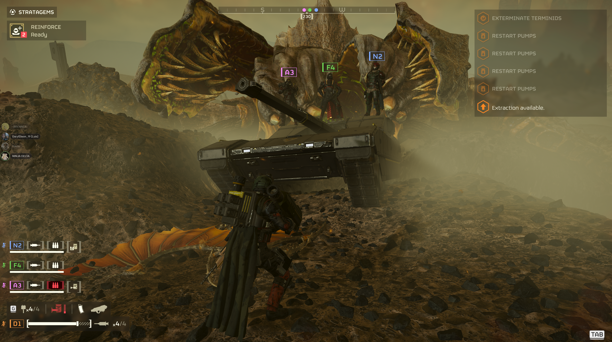
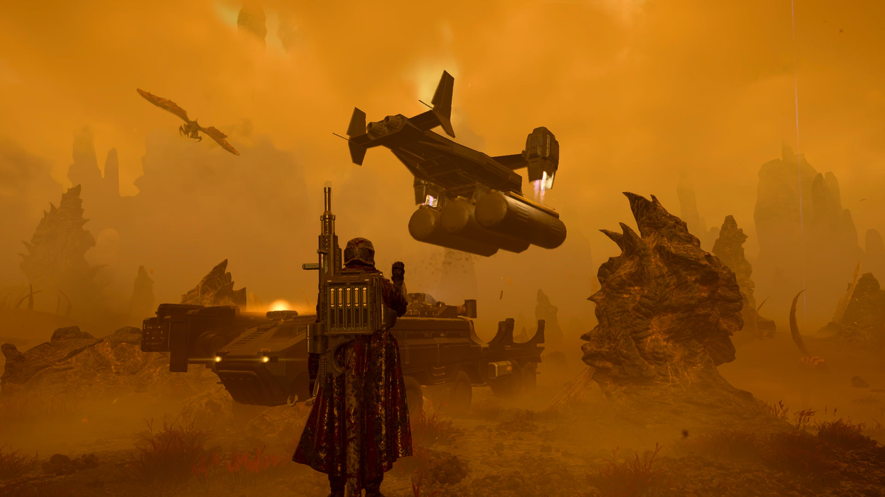
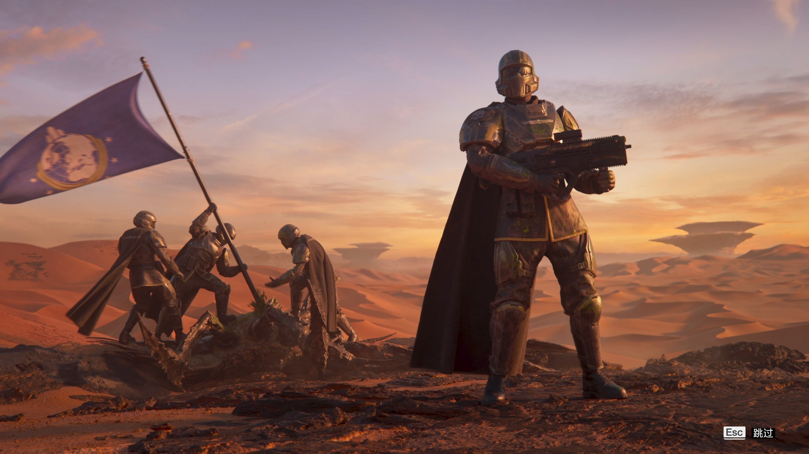
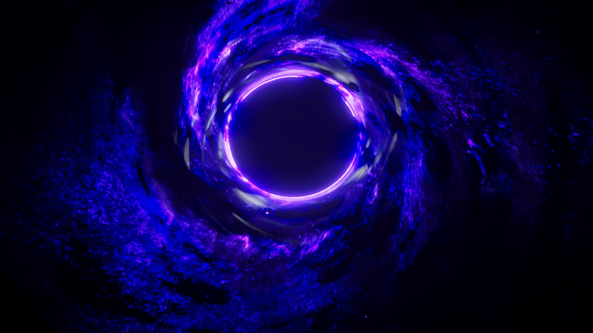
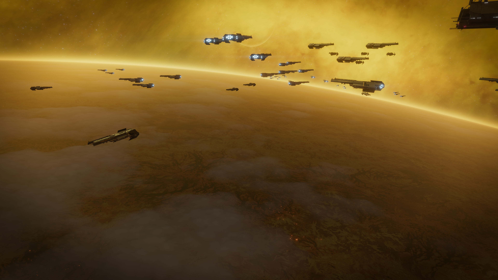
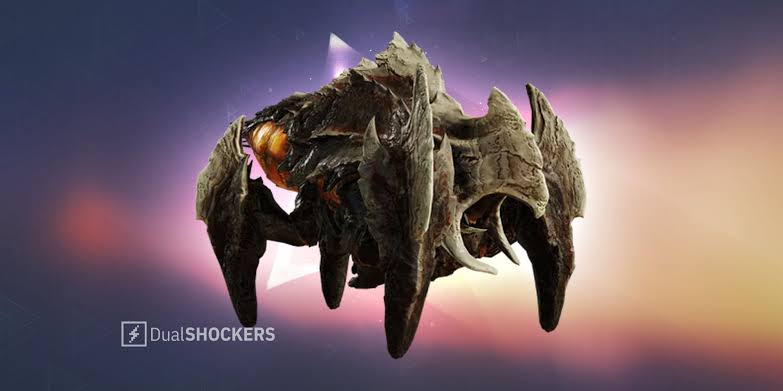

Origem
Os  Terminídeos não são uma espécie nova: eles descendem diretamente dos antigos "Insetos" enfrentados pela Super Terra na Primeira Guerra Galáctica, nos anos 2040. Sua forma lembra grandes insetos, aracnídeos e crustáceos terrestres, e seu mundo natal é Kepler Prime, um planeta desértico nas franjas orientais da galáxia.
Terminídeos não são uma espécie nova: eles descendem diretamente dos antigos "Insetos" enfrentados pela Super Terra na Primeira Guerra Galáctica, nos anos 2040. Sua forma lembra grandes insetos, aracnídeos e crustáceos terrestres, e seu mundo natal é Kepler Prime, um planeta desértico nas franjas orientais da galáxia.
A Federação descobriu que, ao morrer, o corpo de um Terminídeo libera grandes quantidades de um óleo raro: o Elemento-710, essencial para alimentar os motores de dobra Alcubierre usados nas viagens interestelares. Após a derrota da espécie em Kepler Prime, em 2084, os sobreviventes não foram exterminados — foram capturados.
O discurso oficial mudou da noite para o dia: da propaganda que pintava os insetos como uma ameaça capaz de infestar a galáxia inteira, a Super Terra passou a tratá-los como um recurso raro e valioso demais para ser eliminado.

As Fazendas de Elemento-710
Pelo século seguinte, a Federação manteve essas criaturas confinadas em fazendas espalhadas por mundos colonizados nos confins orientais da galáxia. O motivo não era ciência nem contenção: era produção de combustível vivo, criado em cativeiro geração após geração.
Foi exatamente esse século de reprodução seletiva e experimentação genética dentro das fazendas de E-710 que deu origem ao que hoje chamamos de Horda Terminídea: uma versão mais adaptável, mais agressiva e muito mais numerosa do que a espécie original — e que, ao longo do processo, perdeu qualquer resquício da inteligência que os "Insetos" originais possuíam.

A Fuga das Fazendas
A contenção que sustentou o fornecimento de combustível da Federação por cem anos não durou para sempre. Em algum momento, as barreiras que prendiam os Terminídeos em suas fazendas foram rompidas, e o que era um recurso controlado se tornou uma praga descontrolada, varrendo os setores orientais da galáxia e dando início à Segunda Guerra Galáctica.
Diferente de um exército convencional, os Terminídeos não operam por comando central ou estratégia — eles avançam por puro instinto biológico de expansão, reprodução e destruição. Ainda assim, sua capacidade de adaptação é assustadora: a espécie demonstrou conseguir reformular a superfície inteira de um planeta em questão de horas, como ocorreu em Meridia, e construir estruturas completamente novas conhecidas como "Mundos-Colmeia", a exemplo do que se formou em Oshaune.

Um Inimigo Sem Ideologia
A propaganda de Super Terra classifica oficialmente os Terminídeos como uma ameaça "fascista" — uma escolha de retórica interessante, já que nenhum indivíduo da espécie é capaz de compreender qualquer ideologia. O rótulo serve para justificar a guerra perante os cidadãos, não para descrever a real natureza do inimigo.
Na prática, o comportamento Terminídeo é movido inteiramente por instinto: enxamear, fechar distância rapidamente e devorar qualquer coisa que ameace o ninho. Castas como as Comandantes de Ninhada e Alfa conseguem emitir comandos rudimentares via feromônios, mas esse controle é frágil — na presença de Helldivers, a horda costuma perder toda formação e atacar sem qualquer coordenação. É esse comportamento de horda, somado a variantes especializadas em ataques ácidos e de impacto, que torna cada confronto contra a espécie uma guerra de atrito.

O Sistema de Contenção e a Tragédia de Meridia
Com o avanço da horda ameaçando fugir de controle, a Super Terra construiu o Sistema de Contenção Terminídea: uma rede de "Planetas-Barreira" — entre eles Meridia, Erata Prime, Fenrir III e Turing — projetada para bombardear os insetos com uma substância letal chamada Termicida e conter o avanço no Setor Umlaut.
O sistema funcionou por cerca de dois meses, eliminando quase toda a população local de Terminídeos. Mas uma pequena parcela dos insetos em Meridia desenvolveu resistência à Termicida, e a exposição contínua acelerou de forma monstruosa sua reprodução. Em questão de horas, o planeta inteiro foi coberto por estruturas de ninho, dando origem à primeira "Supercolônia" Terminídea da galáxia — comparável em escala apenas ao próprio mundo natal, Kepler Prime.
Considerando Meridia uma causa perdida, a Super Terra recorreu a uma solução extrema: o Fluido Negro, uma substância obtida dos Iluminados. Em 2 de junho de 2184, os Helldivers concluíram a Operação Paz Duradoura, injetando o Fluido Negro no núcleo do planeta. Meridia não apenas foi destruída — ela colapsou em uma singularidade, um buraco negro que engoliu todo o sistema estelar ao redor. O que restou, batizado de Singularidade Meridiana, viria a se revelar não apenas uma cicatriz de guerra, mas também um portal usado mais tarde pelos Iluminados para lançar uma invasão diretamente contra a Super Terra.

O Breu: Uma Nova Mutação
Nos confins mais distantes do território Terminídeo, uma densa nuvem de esporos conhecida como "O Breu" começou a se espalhar, cobrindo planetas inteiros em uma névoa alaranjada que reduz drasticamente a visibilidade. Mais do que um fenômeno atmosférico, o Breu acelera a mutação genética de tudo que entra em contato com ele, dando origem a cepas de Terminídeos ainda mais perigosas do que as conhecidas até então.
O Breu também trouxe de volta linhagens que a Super Terra acreditava extintas, como os colossais Impaladores e os "Senhores da Colmeia", e permitiu a descoberta dos primeiros Mundos-Colmeia — cidades subterrâneas Terminídeas, como a encontrada em Oshaune, que sugerem uma organização social muito mais elaborada do que o simples instinto de enxame.

Cepa Predadora
Especializada em emboscadas furtivas: ataca em alta velocidade e utiliza camuflagem para cercar Helldivers antes que percebam a aproximação.
Cepa Explosão de Esporos
Identificada pela primeira vez em Fori Prime. Desenvolveu uma simbiose com um fungo local que a faz explodir em uma nuvem de esporos ao ser derrotada, cobrindo a área e ocultando outros insetos próximos.
Cepa Rompedora
Encontrada exclusivamente nos Mundos-Colmeia recém-descobertos, associada às estruturas subterrâneas reveladas pelo avanço do Breu.
Galeria


Linha do Tempo
- 2084 Super Terra derrota os "Insetos" em Kepler Prime, encerrando a Primeira Guerra Galáctica contra a espécie e iniciando o cativeiro em fazendas de Elemento-710.
-
~ Um século depois
As barreiras de contenção das fazendas se rompem. Os Terminídeos escapam e se espalham pelos setores orientais, dando início à Segunda Guerra Galáctica.
-
2184
O Sistema de Contenção Terminídea falha em Meridia: os insetos desenvolvem resistência à Termicida e o planeta se transforma na primeira Supercolônia.
- 2 de junho de 2184 A Operação Paz Duradoura usa Fluido Negro para colapsar Meridia, transformando o planeta na Singularidade Meridiana.
-
2185
Surge o Breu: uma nuvem de esporos que mutaciona os Terminídeos, dando origem à Cepa Predadora, à Cepa Explosão de Esporos e à descoberta dos primeiros Mundos-Colmeia, como Oshaune.